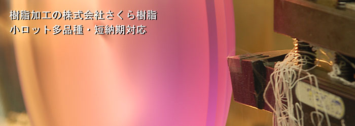
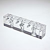
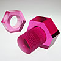
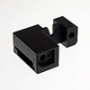
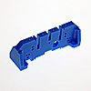
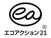

トップページ
｜
会社概要
｜
認証取得
｜
沿 革
｜
主要設備
｜
加工紹介
｜
アクセス
｜
採用情報
｜
見積依頼
｜
ネットショップ

＜TOPICS＞
樹脂加工の株式会社さくら樹脂
2023/11/22
マスターマインドMR2-008 UVインクジェット印刷機を導入
2023/05/21
ヤマザキマザックQTN-200 NC旋盤を導入
2022/02/28
協和KP-1000 鏡面加工機を導入
2021/08/29
大阪機工VM53R マシニングセンターを導入
2018/11/01
若狭 尚弘 代表取締役社長 就任
2018/02/02
品質マネジメントシステムISO9001：2015に更新
2017/01/10
品質マネジメントシステム ISO9001:2008の認証を更新
2016/12/09
環境マネジメントシステム エコアクション21の認証登録を更新
2015/12/26
画像寸法測定器を導入
2014/12/09
環境マネジメントシステム エコアクション21の認証を更新
2014/10/14
庄田鉄工NCN8200NCルーターマシンを導入
2014/01/08
品質マネジメントシステム ISO9001:2008の認証を更新
2013/09/30
横浜型地域貢献企業認定の更新
2012/12/10
環境マネジメントシステム エコアクション21の認証登録を更新
2012/01/30
東京都教育委員会より感謝状を授与
2011/09/26
横浜型地域貢献企業認定の更新
2011/01/25
品質マネジメントシステム ISO9001:2008の認証を取得
2010/12/10
環境マネジメントシステム エコアクション21の認証を取得
2010/10/26
コマーシャライザーでCMを追加
2010/08/10
第2期中小企業人材能力発揮奨励金の対象となる
2010/03/05
21年度横浜市中小企業経営革新促進助成の対象となる
2010/02/08
第31回 工業技術見本市 テクニカルショウヨコハマ2010出展のご報告
2010/02/04
第1期中小企業人材能力発揮奨励金の対象となる
2010/02/03
第31回 工業技術見本市 テクニカルショウヨコハマ2010出展中
2010/01/19
第31回 工業技術見本市 テクニカルショウヨコハマ2010出展のご案内
2009/12/15
第17期（平成21年10月31日）決算公告を公開
2009/10/01
平成21年度第1回 横浜型地域貢献企業に認定
2009/08/25
地球温暖化対策チーム・マイナス6％へ参加
2009/08/04
株式会社さくら樹脂ホームページ全面リニューアル
2009/02/04
社屋を横浜市港北区樽町4丁目に移転
2009/02/04
第30回 工業技術見本市 テクニカルショウヨコハマ2009に出展
2009/01/09
横浜市SBIR・中小企業研究開発助成の対象に認定
2009/11/05
ネットショップ「アクリ屋ドットコム・フレーム支店」開設
2009/10/30
100% Design Tokyo 2008 出展
2008/10/15
AEDを社屋入り口に設置し、近隣の方もご利用可能に
＜ご挨拶＞
樹脂加工の株式会社さくら樹脂
株式会社さくら樹脂は、横浜で平成5年の設立時より各種プラスチックの切削加工品の受託製造を主業にして参りました。
平成13年からは、これら工業用部品の受託製造に加え、アクリル素材のカット販売・自社商品を直接ご提供するネットショップ「アクリ屋ドットコム」を開設し、広く一般のお客様へのサービスも展開しております。
マシニングセンターや旋盤機械においては、それぞれ加工範囲・サイズの異なった機械を個別に揃え、小ロット多品種にも対応可能となる様に設備投資して参りました。
近年では、アクリル重合設備を追加して、社外専門家・公的機関と連携しての技術開発、更に社内IT化を一層進める事での短納期対応等、これからもお客様に喜んで頂けるよう努力する所存です。
また、同時にお客様のニーズ（必要な物）を知り、お客様の立場になって考え応える努力を惜しみません。これからも製品とサービスを通じて、お客様に安心と喜びを提供して行きます。




認証登録番号06960

認証番号0006328
地域貢献企業
認定番号21(6)0071
品質活動
環境活動
CSR活動
Copyright(C) Sakura Plastics Corporation All rights reserved.
株式会社さくら樹脂